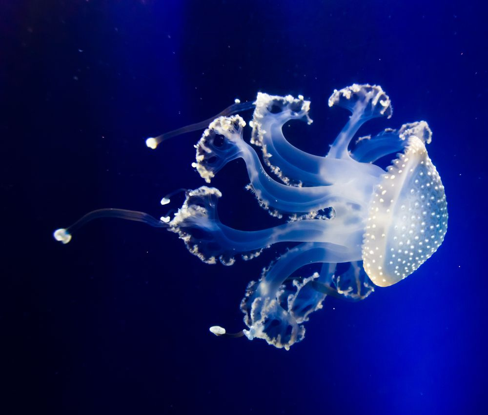
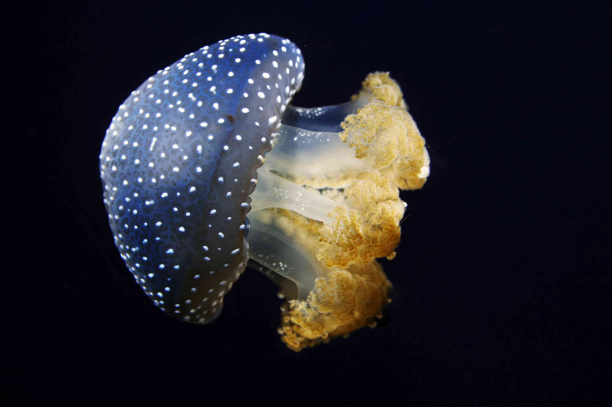
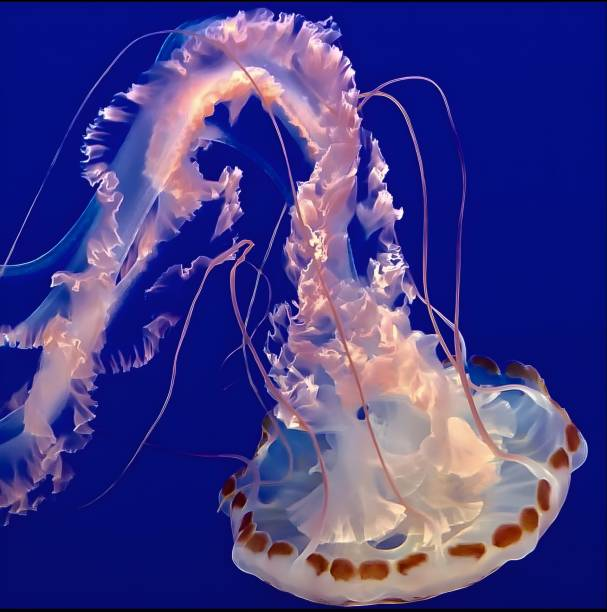
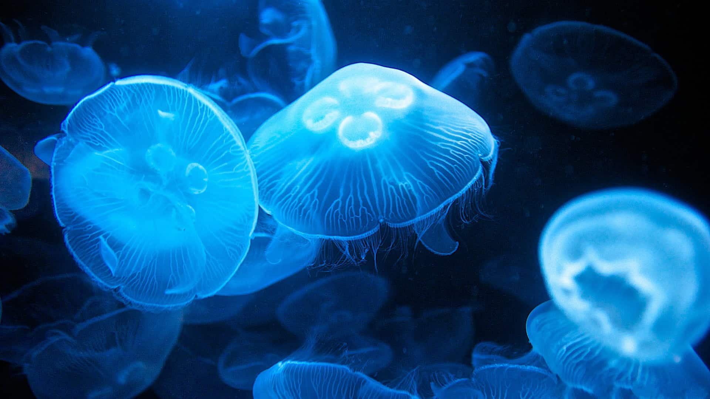

What Are Jellyfish?
Jellyfish are ancient marine animals that have existed for over 500 million years. Despite their name, they are not fish at all. They belong to a group called cnidarians, which also includes corals and sea anemones.
Their bodies are made mostly of water and consist of a bell-shaped top and trailing tentacles used for capturing prey. Many species glow with stunning bioluminescent colors in shades of blue, green, and purple.
Amazing Features

Some jellyfish produce their own light through bioluminescence.

Tentacles contain tiny stinging cells used to capture food.

Large groups are called blooms and can contain thousands.
Where They Live
Jellyfish are found in every ocean on Earth, from warm tropical waters to icy polar seas. Some species even live in deep ocean environments where sunlight never reaches.
They drift with currents rather than swimming strongly, which is why they are often called ocean drifters.